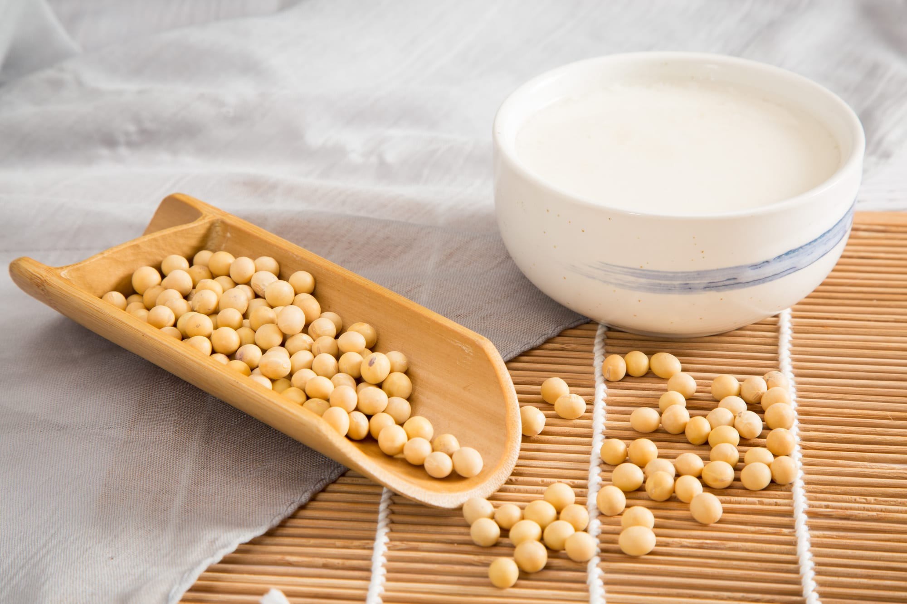

People in This Story · 這篇文章裡的人

一甕醬油等 18 個月、
一片茶園守 12 年、
一尾魚養 9 年——他們對時間的認知，跟我們不一樣。
日本人有一個詞叫「職人」——一生只做一件事，做到極致。台灣話裡，我們叫這種人「憨慢」——有點笨、有點慢、有點不知變通。但仔細看，這兩個詞講的，其實是同一種人。
匠人職人的特徵，是他們對「效率」的理解跟一般人完全不同。一甕醬油別人釀三個月，他要等十八個月；一片茶園別人一年採六次，他只採三次；一尾魚別人養一年出貨，他養九年。從商業邏輯看，這些人都不應該賺錢——但偏偏他們做的東西，就是有人願意等、願意排、願意用兩倍三倍的價錢買。
這個專題記錄了 10 位職人。他們都有一個共通點：**做這件事的時候，時間不是他們的成本，是他們的材料**。
—— 編輯室 · 2026 年春
阿堂師的醬油甕一字排開，一百二十個。每一個甕都有一張紙條，寫著「2024.02.08 入甕」、「2024.02.09 入甕」——連續曬 540 天以後才能開。別人問他為什麼不做快速醬油，他笑說：「我不是不會做快的，是慢的本來就該有人做。」
阿甘的茶樹 12 年了。頭兩年不能採——怕傷根系。第三年開始試採，但量很少。真正穩定要到第五年以後。他說：「你急，茶樹不急。急也沒用，它自己有它的時鐘。」
「不是我不會快，
是慢的本來就該有人做。」
—— 阿堂師，台南醬油
這些職人等的，不是「賺錢」，是「對」。對的味道、對的口感、對的質地——他們心裡有一個標準，沒達到就不出貨。就算等十倍的時間，他們還是等。
這幾年「職人精神」變成一個行銷詞，太多人掛著這個名字賣普通東西。但真正的職人，其實都有一個特徵：他們對自己做的東西，永遠不滿意。
阿堂師做醬油 28 年，現在泡茶的時候還在抱怨去年那一批「黃豆下得太少」。羊頭目養羊 40 年，最近還在研究羊奶發酵的菌種怎麼改。阿甘做茶 12 年，每一批茶都會自己先喝，皺眉頭的那批就整批銷毀。
這不是完美主義。**這是他們跟自己的東西，還在對話**。做一百次、做一千次，每一次都還在學新的。
「做這行最怕的，
不是做不好，
是做到自己滿意。」
—— 羊頭目，彰化
全世界都在講效率，為什麼還要留這些慢的人？
因為所有快的東西，都有一個問題：它們長得太像了。快速量產的醬油，嘗起來都差不多；速成的茶葉，泡出來都差不多；機械化養殖的肉，口感也都差不多。慢的東西，**才有「特別」的可能**。
這些職人守住的，不只是自己那一口味道——是讓世界還有多樣性的那個可能。如果有一天所有的東西都變得一樣，那才是真正的淘汰。
慢的人不會被淘汰，只會被留下來。